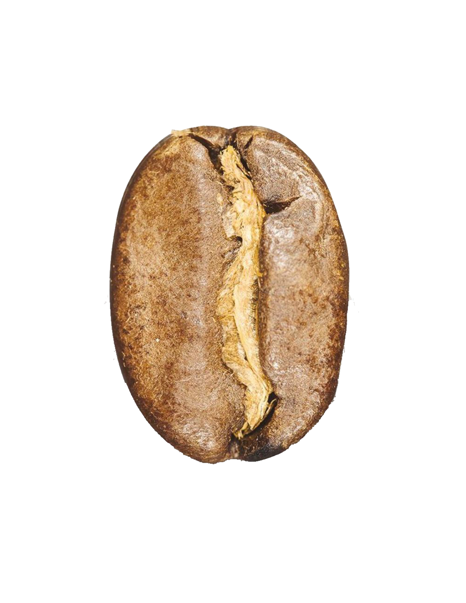
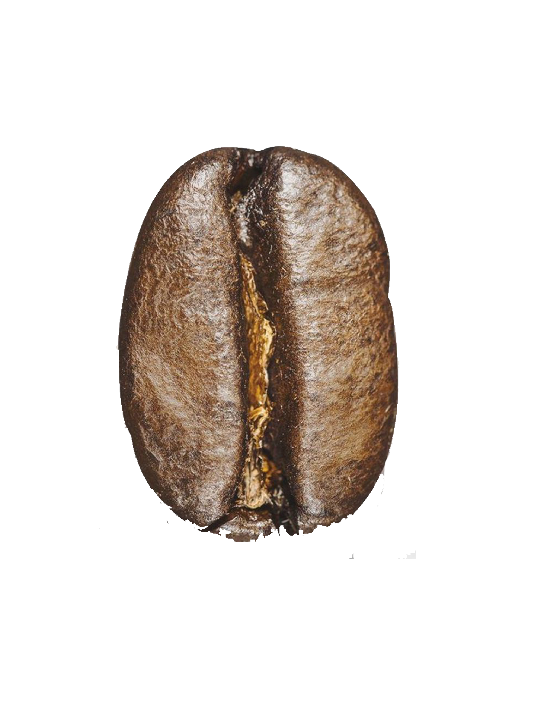
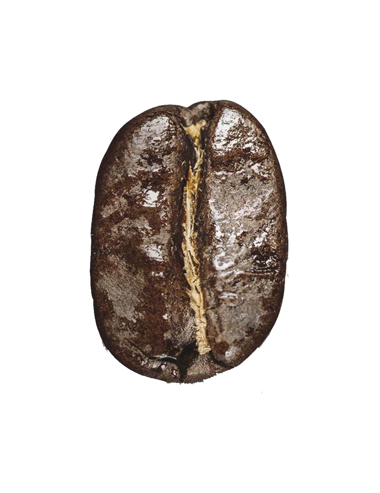

Light
Light roast coffees have a light body and pronounced
snappy acidity. There is no oil on the surface of the
beans. The original flavors of the bean are retained to a
greater extent than in darker roasted coffees. Light
roasts retain most of the caffeine from the coffee bean.

Medium
Medium roasted coffees are medium brown in color with
more body than light roasts. Medium roasts exhibit a more
balanced flavor, aroma and acidity. This roast is often
referred to as the American roast because it is generally
preferred in the United States

Dark
Dark roasts are dark brown or almost black. The beans can
have an oily surface and a pronounced bold rich body.
As roasting times increase, acidity decreases which provides
smooth mellow flavor.